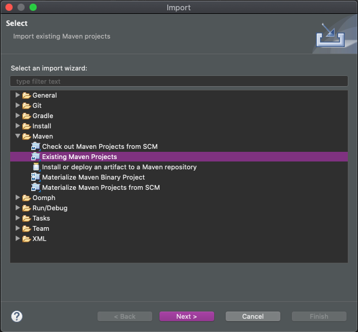
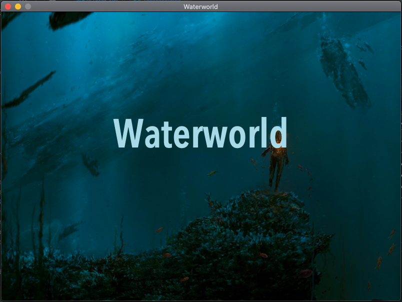
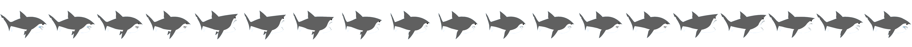
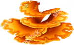

Introduction
In this tutorial you will create a simple game called Waterworld. We will start with an empty project. Only the assets and the project settings are provided. Step-by-step you will be guided in the creation of simple game, and in doing so, become familiar with many of the features of Yaeger.
What we will be building
When this tutorial is completed, we will have a game in which a fish (called Hanny) has to navigate through the ocean and pop air bubbles. While doing so, she has to prevent being bitten by enemies that also prowl the ocean

Prerequisite
Yaeger requires Java JDK16 or above to work. Although it can be used with any modern IDE that supports Java, this tutorial will only include examples for JetBrains IntelliJ and Eclipse.
This tutorial expects a basic understanding of the Java Programming language. From Java, we will only be using the basic constructs, such as Packages, classes, interfaces and methods. More "modern" parts of the language, such as lambda's or generics are not required, nor used.
Creating your first Yaeger game
We are going to create a game that consists of three scenes. A Title scene, a Game Level scene and a Game Over scene. The Game itself will be about a fish called Hanny, that swims in the ocean and tries to pop air bubbles. Sadly most bubbles contain a poisonous gas and popping too many of those kills Hanny. Not only Hanny swims in the ocean, but so does an evil Shark and Swordfish. If they get their hands on Hanny, she gets eaten.
Clone the starter project
We provide a Git repository, that contains both a starter project and the required assets. Either clone this repository to your local machine, or download the zip file.

The project is a Maven project, which will be
recognized by all modern IDE's. Knowledge of Maven
is therefore not required, but just to paint the full picture: you'll find a
pom.xml file at the root of the project. This file contains the full project
setup, and you will notice the dependency it has onYaeger.
Importing the Maven project into your favourite IDE
Since all modern IDE's can import a Maven project, it does not matter which you use. In this tutorial we focus on the two most popular amongst Java developers: JetBrains IntelliJ and Eclipse.
Importing the project in IntelliJ
-
Select File > Open...
-
In the import window, navigate to the project directory. Notice that this directory contains a
pom.xmlfile. Select thispom.xmlfile and press Open. -
IntelliJ will notice that you are opening a
pom.xmlfile and will ask if it needs to open the entire project:
In the Open Project Window select Open as Project
Importing the project in Eclipse
-
Select File > Import...
-
In the import window, expand maven, select Existing Maven Projects, and click Next:

-
Click Browse and select the project directory. Notice that this directory contains a
pom.xmlfile:
Switch branch to look at the solution
Whenever your stuck, you can switch to Branch implementation, to see the full implementation. For switching branches some knowledge of Git is required, so read the Git documentation to figure out how to switch branches.
Setting up a new game
Let's first create the entry-point, the class that contains the main-method.
 Create a class called
Create a class called Waterworld.java in the
package com.github.hanyaeger.tutorial.
Let Waterworld extend the class YaegerGame and
implement the required methods. Leave them empty for now.
Add a main-method that calls the static
method launch() from the class YaegerGame. Pass the arguments from
the main-method to the launch-method:
public static void main(String[] args){
launch(args);
}
 You now have a minimal Yaeger game. Run the
You now have a minimal Yaeger game. Run the
main-method to start the game. As you will notice, there is a default width
and height, and you'll be greeted with the Splash Screen. Since no Scenes have
been added, Yaeger exits after showing this Splash Screen.

Set the width, height and title of the game
The game now uses the default size (width/height), which might be a bit small.
You can use the method setupGame() to set the size to a specific value.
Furthermore, you can set the title of the game, which will be shown as the title
of the window.
Add the following body to the setupGame() method
@Override
protected void setupGame() {
setGameTitle("Waterworld");
setSize(new Size(800, 600));
}
The game has been set up, in the next step we will add the scenes and their content.
Creating the first scene
We're going to add the first scene to the game. Yaeger supports two different
types of scenes. A StaticScene and a DynamicScene. A StaticScene will have
no Game World Update (GWU) and should be used for scenes in which nothing
should move or be animated. A DynamicScene does receive a GWU and should be
used for Game Levels, or scenes that contain animated elements. Since nothing
will have to be animated for the Title scene, it can be a StaticScene.
Add the title scene
Create a new Class called TitleScene that
extends StaticScene in the package com.github.hanyaeger.tutorial.scenes.
Implement the required methods, but leave them empty.
Set the background image and audio
The method setupScene() should be used for setting the background image and
audio of a scene. For this you can use the methods
setBackgroundImage(String) and setBackgroundAudio(String).
Both the image and the audio are provided in the resources/ folder. This
folder should be the only place to store your assets. The url is relative to
this folder, so the file background1.jpg from the folder backgrounds/ should
be accessed through the url backgrounds/background1.jpg. For the background
audio, we will use ocean.mp3.
Add the following body to the setupScene().
@Override
public void setupScene(){
setBackgroundAudio("audio/ocean.mp3");
setBackgroundImage("backgrounds/background1.jpg");
}
At this point you should have a look at the file module-info.java, which is
called the Module Descriptor.
This is a special file that defines (amongst other things) which directories
should be opened up. The resources folder itself is open by default, but
any subdirectory should be added for the resources in those directories to
be available. As you will notice this has already been done:
opens audio;
opens backgrounds;
opens sprites;
Do not forget to do this for your own game, or an Exception will be thrown when the game is trying to access a resource that is in a directory that has not been opened up.
Add the TitleScene to the Yaeger game
Now that we have created the TitleScene, we should add it to the Game. For
this, we will use the method addScene(int, YaegerScene) from Waterworld. java. This method should be called from setupScenes() and takes two
parameters. The first one identifies the scene, which you can
use to set the active scene. The second parameter is an instance of the scene.
So add the following body to the setupScenes()
method:
@Override
protected void setupScenes(){
addScene(0, new TitleScene());
}
It's time to run the game again. After the Splash Screen
has been shown, the TitleScene should be loaded.
Add some text to the TitleScene
Let's add the title of the game to the TitleScene. All objects you can add to
a scene are called Entities. Of these there are various different types. There
are TextEntities that should be used for displaying text, SpriteEntities
for displaying a Sprite and shape-based Entities, such as a
RectangleEntity. For all these types there are the Static and
Dynamic version.
A title is typically the static version of a TextEntity. We will use the
method setupEntities() to add Entities to the scene.
Add the following body to the setupEntities() method:
@Override
public void setupEntities(){
var waterworldText = new TextEntity(
new Coordinate2D(getWidth() / 2, getHeight() / 2),
"Waterworld"
);
waterworldText.setAnchorPoint(AnchorPoint.CENTER_CENTER);
waterworldText.setFill(Color.DARKBLUE);
waterworldText.setFont(Font.font("Roboto", FontWeight.SEMI_BOLD, 80));
addEntity(waterworldText);
}

First we create the waterworldText by instantiating a TextEntity. The first
parameter of the constructor is the Coordinate2D. To place it at the center of
the scene, we use the getWidth()/2 and getHeight()/2. The second parameter
is the text to be shown. To actually place the center of the TextEntity at the
center of the scene, we use the method setAnchorPoint(). To set the color,
we use setFill(). We set the font to Roboto, through the
method setFont() and lastly we add the TextEntity to the scene, by
calling the method addEntity().
Run the game again. The TitleScene should now contain
the title.
Creating a level
Now that we have a Title Scene, lets add a Game Level. Since a level is
typically a Scene that contains animated Entities, we are going to extend a
DynamicScene.
Add a scene called GameLevel, which extends
DynamicScene, to the com.github.hanyaeger.tutorial.scenes
package. Use the method setupScene() to set the background to the
asset background2.jpg and the audio to waterworld.mp3.
At this moment the level has not yet been added to the game. You have only
created a new class, that needs to be instantiated and added to
YaegerGame.
Use the setupScenes() from the Waterworld-class to
add GameLevel to the game. Choose a wise id.
Add a button to switch to the game scene
Although GameLevel has now been added to the Yaeger Game, there is no way to
reach it yet. As said before, the first added Scene is set as the active scene
and that should be the TitleScene. To switch to GameLevel
you will need to call the method setActiveScene(id) on the Waterworld class.
To trigger this call, we are going to add a button to the TitleScene. Clicking
the button will result in switching to
GameLevel. As said before, everything that should appear on a Scene is an
Entity. For the button we are going to use a TextEntity that will need to
listen to mouse-clicks. Because of the latter, we can no longer use an inline
TextEntity as we did for the title. We are going to create a new Class,
called StartButton that extends TextEntity
, and add all the required behaviour to this Class.
Create and add the button
Create a new Class StartButton that
extends TextEntity and place it in the package
com.github.hanyaeger.tutorial.entities.buttons. Use the following constructor:
public StartButton(Coordinate2D initialLocation){
super(initialLocation,"Play game");
setFill(Color.PURPLE);
setFont(Font.font("Roboto", FontWeight.BOLD, 30));
}
As you will notice we use the text Play Game, set the color to Purple and use Roboto for the font.
Now use the setupEntities() from the TitleScene to
add the StartButton. Place it at the center of the screen, just below the
title.
Add behaviour to handle mouse clicks
In general, to expand the behaviour of an Entity, you should add the
appropriate Interface to the Entity. To let an Entity listen to mouse button
clicks, the Entity should implement the Interface
MouseButtonPressedListener.
Let StartButton implement the interface
MouseButtonPressedListener.
When the user clicks on the StartButton the handler (onMouseButtonPressed())
is called. this handler should call setActiveScene() on the Waterworld
class, but this method is not available from the TitleScene. So lets pass the
instance of Waterworld to the StartButton and then call
setActiveScene() from the mouse pressed handler.
Change the constructor of TitleScene to
private Waterworld waterworld;
public TitleScene(Waterworld waterworld){
this.waterworld = waterworld;
}
and supply an instance of Waterworld (notice the this) to the TitleScene
in the setupScenes() method:
@Override
protected void setupScenes(){
addScene(0, new TitleScene(this));
addScene(1, new GameLevel());
}
Now do the same for the constructor of
the StartButton. This constructor already has the location as a parameter, so
after this change it will have two parameters.
As the last step wel would like to add the following to the mouse button handler:
@Override
public void onMouseButtonPressed(MouseButton button, double x, double y){
waterworld.setActiveScene(1);
}
Run the game again. The TitleScene should now contain
the title, and a start button. Clicking this start button should switch the game
to GameLevel.
Add more behaviour to make the button into a real button
The Button should work now, but it gives little visual feedback on its
behaviour. We are going to add two more interfaces to the StartButton, being
the MouseEnterListener and MouseExitListener.
Add the interface MouseEnterListener
and MouseExitListener and implement their handlers in the following way:
@Override
public void onMouseEntered(){
setFill(Color.VIOLET);
setCursor(Cursor.HAND);
}
@Override
public void onMouseExited(){
setFill(Color.PURPLE);
setCursor(Cursor.DEFAULT);
}
Notice how we change both the color of the entity and the mouse cursor.
Now we have set up the game level, in the next chapter we'll add entities to turn it into an actual game.
Adding Dynamic Entities
Before adding Hanny, lets start by adding her enemy, the evil swordfish. Since
this fish will be based on the image sprites/swordfish.png and he will
swim around, we will be using a DynamicSpriteEntity.
Add the Swordfish
Create a new class called Swordfish that
extends DynamicSpriteEntity in package
com.github.hanyaeger.tutorial.entities. Since the image of the
swordfish is already of the correct size, we don't need to set its size through
the constructor, which can now look like:
public Swordfish(Coordinate2D location){
super("sprites/swordfish.png", location);
}
Notice how we call super(String, Coordinate2D) and pass the url and
location to the constructor of the super class.
Animate the Swordfish
Since the swordfish is a DynamicSpriteEntity, we can let it move around the
scene. To do this, we will need to set both the direction and speed. The
direction will be an angle in degrees, where 0 denotes upwards. For
convenience, Yaeger supplies a method to set both values at once. For the
trivial directions (up, left, right and down) Yaeger provides an Enumeration
called Direction, which can also be passed to the method.
Add the following method-call to the constructor
of Swordfish, just after the call to super:
setMotion(2, 270d);
Now use the setupEntities() from GameLevel to
add Swordfish.
Run the game again. You should now see a swordfish that
swims from right to left and then disappears of the screen.
Make the swordfish swim in circles
Now we would like to add behaviour that notifies us when the swordfish has left the scene. That way we can place him to the right of the scene, and make him reappear and continue his path.
As seen before, adding behaviour is being done by implementing the correct
interface. For this case, Yaeger supplies the interface
SceneBorderCrossingWatcher.
Let Swordfish implement the
interface SceneBorderCrossingWatcher and implement the event handler in the
following way:
@Override
public void notifyBoundaryCrossing(SceneBorder border){
setAnchorLocationX(getSceneWidth());
}
Run the game again and see what happens. To also change
the y-coordinate at which the swordfish reappears, you can add the following
method-call:
setAnchorLocationY(new Random().nextInt((int) getSceneHeight()- 81));
to the handler.
Use the build-in debugger to see what is happening
Yaeger contains a simple debugger that displays how much memory is used by the game and how many Entities are currently part of the game. When a game doesn't work as expected, you can use this debugger to get some inside information.
Run the game with the commandline argument
--showDebug. Setting these options can usually be done from the Run
Configuration within your IDE, as explained below.
See if you can relate the stated numbers to what you expect from your game. To disable the Debugger window, just remove the commandline argument from the Run Configuration.
Setting commandline arguments from IntelliJ
When using JetBrains IntelliJ, first select Edit Configurations...:

Add the commandline argument to the correct Run Configuration:

Setting commandline arguments from Eclipse
When using Eclipse, select Run Configurations... from the toolbar:

Select the Arguments tab and edit the Program Arguments:

Adding a player controlled entity
The player will control Hanny by using the arrow keys. Again we will use
a DynamicSpriteEntity.
Create a class for Hanny in the same package as
SwordFish. Make sure Hanny is placed in the top left corner of the scene.

You might notice that the image of Hanny contains two Hannies. This approach is a standard way to animate a figure in a game. The image itself contains multiple sprites, and the game engine is responsible for showing only one of those sprites, or cycling through them to create the impression of movement.
Yaeger supports this through its DynamicSpriteEntity, by explicitly stating
the number of rows and columns of sprites an image contains. In case of Hanny,
we have one row, that contains two columns. By default, a DynamicSpriteEntity
assumes the image contains only one sprite, but by calling the correct
constructor, we can change this.
With this in mind, the constructor of Hanny should
look like:
public Hanny(Coordinate2D location){
super("sprites/hanny.png", location, new Size(20,40), 1, 2);
}
Now use the setupEntities() from the GameLevel to
add Hanny. Place her in the top left corner of the screen.
Animate Hanny
To animate Hanny, we are going to let her listen to user input through the
keyboard. As with the MouseButtonPressedListener, we are going to add an
interface. In its event handler, we are going to call setMotion(), so we
can change the direction based on the key being pressed. When no buttons are
pressed, we use setSpeed(0) to make sure Hanny keeps her location.
Let Hanny implement the interface KeyListener and
implement the event handler in the following way:
@Override
public void onPressedKeysChange(Set<KeyCode> pressedKeys){
if(pressedKeys.contains(KeyCode.LEFT)){
setMotion(3,270d);
} else if(pressedKeys.contains(KeyCode.RIGHT)){
setMotion(3,90d);
} else if(pressedKeys.contains(KeyCode.UP)){
setMotion(3,180d);
} else if(pressedKeys.contains(KeyCode.DOWN)){
setMotion(3,0d);
} else if(pressedKeys.isEmpty()){
setSpeed(0);
}
}
Notice how the event handler receives a Set<KeyCode>. This Set will contain
all the keys that are currently being pressed. Depending on which keys are in
this Set, we set the motion of Hanny.
Change the frame index depending on the direction of the Hanny
We must still change the frame index depending on the direction of Hanny. For
this, a DynamicSpriteEntity provides the method setCurrentFrameIndex(int).
Set the correct frame index. Make sure only the left
and right buttons change the direction in which Hanny seems to be swimming.
Make sure Hanny doesn't leave the scene
To ensure that Hanny remains on the screen, we can use the interface
SceneBorderTouchingWatcher, which provides an event handler that gets called
whenever the entity touches the border of the scene. By implementing this
interface, the entity needs to implement the method
void notifyBoundaryTouching(SceneBorder), which receives which of the four
borders was touched. We can use this the set either the x or
y-coordinate of Hanny to ensure she remains within the screen. Besides that, we
also set her speed to 0.
@Override
public void notifyBoundaryTouching(SceneBorder border){
setSpeed(0);
switch(border){
case TOP:
setAnchorLocationY(1);
break;
case BOTTOM:
setAnchorLocationY(getSceneHeight() - getHeight() - 1);
break;
case LEFT:
setAnchorLocationX(1);
break;
case RIGHT:
setAnchorLocationX(getSceneWidth() - getWidth() - 1);
default:
break;
}
}
Note that when Hanny is initially being placed on the scene, we should make sure she doesn't touch the scene border, because that will lead to strange unwanted behaviour.
Implement the interface SceneBorderTouchingWatcher
and use the event handler to ensure that Hanny doesn't leave the screen.
Make Hanny experience gravity and friction
Yaeger supports a simple approach to enable gravity and friction, which can be
enabled by implementing the Newtonian interface. With that interface the
entity will continually experience gravitational pull and friction whenever
it moves. To learn more about this interface, have a look at
the API
.
Add the interface Newtonian to Hanny and add the
following two lines to Hanny's constructor:
setGravityConstant(0.005);
setFrictionConstant(0.04);
They will ensure very low gravity and high friction, which would be the case when swimming in the ocean.
Last thing to do, is to make sure Hanny does not stop swimming when none of the
arrow buttons are pressed. To do this remove the following line from the event
handler from the KeyListener interface:
else if(pressedKeys.isEmpty()){
setSpeed(0);
}
Change the event handler from the KeyListener
interface to ensure the speed is no longer set to 0.
Add interaction through collision detection
A standard feature of a game engine is collision detection. It is an algorithmically complex calculation that determines if any two entities occupy the same part of the screen. If so, they have collided.
Yaeger differentiates between entities that need to be notified about a
collision (a Collided), and those that do not need to be notified (a
Collider). Think of this as a train and a fly. If they collide, the train
doesn't even notice it; the fly does (and dies).
With this approach, it is possible to minimize the number of entities that need to be checked for collisions every GWU, and it also enables a good Object-Oriented approach to place the responsibility of handling a collision on the right entity.
Add collision detection for Hanny and the swordfish
The swordfish is a dangerous foe and each time Hanny collides with him, she will lose a life point. At the start of the game Hanny has ten of those and when she reaches zero, she dies, and it is Game Over.
There are several algorithms for collision detection but Yaeger only supports
the simplest implementation, which is based on the Bounding Box of an entity.
This method is called Axis Aligned Bounding Box (AABB) collision detection and
is implemented through the interfaces Collided and Collider.
Add the correct interface to Hanny and the swordfish.
You do not yet need to implement the event handler, but for testing purposes you
should add a System.out.println("Collision!");
Start the game and test if the collision has been
detected. To get more insight into these collisions, it is possible to run
Yaeger with the commandline argument --showBB, which makes all bounding boxes
visible.
You might have noticed that because Yaeger uses the Bounding Box to check for collisions, the collision detection is not as accurate as you might like it to be. This can be solved by using the notion of a hit box, a shape that defines the area that is being checked during a collision detection cycle.
We will first finish implementing what happens after a collision. In the next chapter we will rework the swordfish to a version where only the sword causes a collision.
Let Hanny respawn after a collision with the swordfish
Because Hanny is the one who needs to know if she has collided with the
swordfish, she will be the one who implements Collided. We are going to
use the event handler to let Hanny respawn at a different location, using
her setAnchorLocation() method.
Use the following event handler to let Hanny respawn at
a random location:
@Override
public void onCollision(Collider collidingObject){
setAnchorLocation(
new Coordinate2D(new Random().nextInt((int)(getSceneWidth()
- getWidth())),
new Random().nextInt((int)(getSceneHeight() - getHeight())))
);
}
Notice that we have access to the SceneWidth and SceneHeight and that we subtract, respectively, the width and height of Hanny to ensure that Hanny respawns within the scene.
Add health points and subtract one on a collision
The next step should be fairly simple, since we will use only features we have already seen.
Create a new static TextEntity called HealthText
with the constructor and method shown below. Add it to the
package com.github.hanyaeger.tutorial.entities.text.
public HealthText(Coordinate2D initialLocation){
super(initialLocation);
setFont(Font.font("Roboto",FontWeight.NORMAL, 30));
setFill(Color.DARKBLUE);
}
public void setHealthText(int health){
setText("Health: " + health);
}
Add this entity to GameLevel, by using the
setupEntities() method, but also pass the instance to the constructor of
Hanny. This way, Hanny has access to the HealthText entity and can call the
method setHealthText(int) whenever her health changes.
Give Hanny a private instance field called health of
type int and initialize it to 10. Also bind the constructor
parameter HealthText to an instance field. Af this change, the constructor and
instance fields of Hanny should look like:
private HealthText healthText;
private int health = 10;
public Hanny(Coordinate2D location, HealthText healthText){
super("sprites/hanny.png", location, new Size(20,40), 2);
this.healthText = healthText;
healthText.setHealthText(health);
}
The last step is to integrate the health into the event handler of Hanny.
Change the event handler to ensure that the health is
decreased, and the healthText changed:
@Override
public void onCollision(Collider collidingObject){
setAnchorLocation(new Coordinate2D(
new Random().nextInt((int)(getSceneWidth()-getWidth())),
new Random().nextInt((int)(getSceneHeight()-getHeight())))
);
health--;
healthText.setHealthText(health);
}
Add a Game Over-scene for when health reaches zero
When health reaches 0 Hanny dies, and the player should see a new scene containing the text Game Over, with below it the clickable text Play again. We have seen all of Yaeger's features that are required for this, so it should be clear how to implement this.
Add a Game Over scene with a Play Again button.
Clicking the Play Again button should load the Game Level Scene.
Change the event handler in Hanny in such a way that
when the health reaches zero, the Game Over scene is loaded.
Add a quit game button to the game over scene
Add a second button to the Game Over scene. Clicking
this button should quit Yaeger. The class YaegerGame provides a method to
quit the game, so use
the JavaDoc
to figure out which one it is.
Run the game and test if the quit button works.
Improve collision detection through the use of composition
Now we have implemented both the swordfish and Hanny, and collision detection between them, we might notice that the collision detection is to rough. The bounding box of the swordfish is much too large, compared to its area, and we would much rather only register a collision if Hanny collides with the actual sword of the swordfish.
We are going to create a new version of the swordfish that does just that. For
this, we will be using a composition of several entities, that will be part of
a DynamicCompositeEntity.
Create a package
com.github.hanyaeger.tutorial.entities.swordfish. In this package create a
class SwordFish that extends DynamicCompositeEntity. Implement the methods,
but leave them empty for now. Delete the previous implementation of the
swordfish and replace all usages with the new one.
Another setupEntities()?
Because a composite entity enables the possibility to create a
composition of entities, it supplies its own setupEntities() method, which
should be used to add the entities that are to be a part of the composition.
A composite entity defines its own area, where the top-left corner has coordinate (0,0). The size of a composite entity is derived from it content.
Create the entities that should be part of the composite entity
The composition will consist of two entities, a SpriteEntity that provides
the image of the swordfish, and a RectangleEntity that will implement
Collided, be invisible and placed exactly on the sword of the swordfish.
Create the class SwordFishSprite that extends
SpriteEntity and place it in the package
com.github.hanyaeger.tutorial.entities.swordfish in the following way:
public class SwordfishSprite extends SpriteEntity {
public SwordfishSprite(final Coordinate2D location) {
super("sprites/swordfish.png", location);
}
}
Create a class HitBox that extends RectangleEntity
and implements Collider in the following way:
public class HitBox extends RectangleEntity implements Collider {
public HitBox(final Coordinate2D initialPosition) {
super(initialPosition);
setWidth(60);
setHeight(2);
setFill(Color.TRANSPARENT);
}
}
Add the entities to the composition
Now use the setupEntities() method from SwordFish to add both entities.
First the SwordFishSprite and then the HitBox. Since the
SwordFishSprite should be placed in the upper-left corner of the
SwordFish, it should be placed at coordinate (0,0).
Add the SwordFishSprite to the SwordFish at
coordinate (0,0).
Add the HitBox to the swordfish in such a way
that it overlaps the sword of the swordfish. It could help to set the fill
of the hitbox to a specific color, so you can see what you're doing.
Make the swordfish swim
Notice that both the image and the hitbox are static entities. They are part
of the composite entity, which is a dynamic entity. This
DynamicCompositeEntity is the one that will move around the scene, and its
content will move with it.
Make the SwordFish swim through the scene as it
did before. Don't forget to make him reappear if he leaves the screen.
Start the game and test if the swordfish behaves as
expected.
Adding more entities and an EntitySpawner
Add another enemy, called Sharky

Not only the swordfish, but also another foe abides in the depth of the ocean:
the evil Sharky. As can be seen, Sharky swims from left to right and is composed
of many sprites. If these sprites are cycled at the correct speed, Sharky
becomes animated. To automatically cycle through the sprites,
a DynamicSpriteEntity provides the setAutoCyce(long) method.
Add Sharky to GameLevel, animate him and let him
swim from left to right. After crossing the scene border, he should reappear
at a random location left of the screen. After colliding with Sharky, Hanny
loses a health point.
Start the game and test if Sharky behaves as expected.
Add air and poison bubbles
We are now going to add the game objective: Hanny is going to pop air bubbles. They emerge from the depth of the ocean and float upwards at random speeds. Some are filled with air, and some are filled with a poisonous gas. When Hanny pops one of those, she loses a health point, but when she pops an air bubble, her bubbles popped score increases, and she earns eternal fame.
Create air and poison bubbles
For air- and poison bubbles we could provide two images of bubbles and use
a DynamicSpriteEntity, but we'll use a different approach. Yaeger provides
various entities for standard shapes and for a bubble we could perfectly use a
DynamicCircleEntity. With it, we can draw a circle and give it the appropriate
size and colors. The big advantage over using an image is that we can give it
any color and size we like, and change it while running the game. Even more
important, it will save on memory usage, since no images need to be loaded into
memory.
Because both air- and poison bubbles share much of their behaviour, a superclass
called Bubble would be the preferable approach, but it is not required. Their
interaction with Hanny will be of later concern.
Create an AirBubble and a PoisonBubble that accept
both the initialLocation and the speed as a parameter of their constructor.
Do not yet add them to the scene. Use
the API
to figure out how to set the size and color (fill and stroke) of both
bubbles. Note that the DynamicCircleEntity inherits those methods from its
parent ShapeEntity, so look for the inherited methods in the JavaDoc.
Ensure you can differentiate between both bubbles.
Use
the API
to figure out how to change their opacity to make them transparent.
Besides the interface
DynamicCircleEntity, Yaeger also contains aDynamicRectangleEntity, aDynamicEllipseEntityand their static versions.
Create a bubble spawner
Because spawning entities into a level is a common feature of games, Yaeger
supports this through the class EntitySpawner. An EntitySpawner should
be extended and can then be added to a scene. The EntitySpawner will
create new instances of YaegerEntityand add them to the scene.
We are going to create a BubbleSpawner that can create both instances
of AirBubble and PoisonBubble.
Create a class called BubbleSpawner that
extends EntitySpawner in the package
com.github.hanyaeger.tutorial.spawners. Notice that the constructor
of EntitySpawner accepts a parameter called intervalInMs. This parameter
will define the interval at which the method spawnEntities() is called. From
this method you can call spawn(YaegerEntity).
Let the bubble spawner spawn air bubbles
The spawn(YaegerEntity) method from the BubbleSpawner should be used for
spawning an entity. Furthermore, the BubbleSpawner should be able to place its
bubbles anywhere below the scene, so it should know the width
and height of the scene. To facilitate this, we are going to pass those two
values to the constructor.
We are going to start with spawning only instances of AirBubble.
The PoisonBubble will be added later on.
Add the following body to the BubbleSpawner.
public class BubbleSpawner extends EntitySpawner {
private final double sceneWidth;
private final double sceneHeight;
public BubbleSpawner(double sceneWidth, double sceneHeight) {
super(100);
this.sceneWidth = sceneWidth;
this.sceneHeight = sceneHeight;
}
@Override
protected void spawnEntities() {
spawn(new AirBubble(randomLocation(), 2));
}
private Coordinate2D randomLocation() {
double x = new Random().nextInt((int) sceneWidth);
return new Coordinate2D(x, sceneHeight);
}
}
Add the bubble spawner to the game level
A YaegerScene does not support entity spawners by default, to enable it, the
scene needs to implement the interface EntitySpawnerContainer, which requires
implementing the method setupEntitySpawners(). From this method we can
call addEntitySpawner(new BubbleSpawner(getWidth(), getHeight()));, which
adds the entity spawner to the scene and ensures the spawned entities appear on
the scene.
Add the BubbleSpawner to the GameLevel.
Run the game to see if everything works as expected.
Make the bubble spawner also spawn instances of PoisonBubble
Let's change the spawnEntities() method to ensure that four out of ten spawned
bubbles will be a PoisonBubble. For this we can use the class Random from
the Java API
.
Change the spawnEntities() method to:
@Override
protected void spawnEntities(){
if(new Random().nextInt(10) < 4){
spawn(new PoisonBubble(randomLocation(), 2));
} else {
spawn(new AirBubble(randomLocation(), 2));
}
}
Make the bubbles pop if they collide with Hanny
Whenever a bubble collides with Hanny, a popping sound should be played, and
they should be removed from the scene. We have already seen how to approach
this. Apparently the bubble needs to be notified when something collides with
it. Remember the interface Collided? But then, this is only applicable if the
entity that collides with it, becomes an Collider. So Hanny will not only be
a Collided, but also a Collider.
Add the interface Collider to Hanny
Add the interface Collided to the PoisonBubble
and AirBubble (since this is shared behaviour, and we are doing proper object
orientation, we will add it to their superclass). Implement the event handler in
the following way:
@Override
public void onCollision(Collider collidingObject){
var popSound = new SoundClip("audio/pop.mp3");
popSound.play();
remove();
}
Notice that we create a SoundClip and call its method play() to create the
pop-sound. The remove() method is available on all entities and ensures they
are removed from the scene.
Remove the bubbles if they leave the scene
Bubbles that leave the scene should still be removed, otherwise they will float on for ever and consume an increasing amount of memory, bringing even the fastest computer to a grinding halt. We have already seen everything needed to accomplish this.
Add the interface SceneBorderCrossingWatcher to
the PoisonBubble and AirBubble, and call the method remove() from the
event handler. Do make sure you call this method only when the top-border has
been crossed.
Run the game and use the debugger to see if the bubbles
that leave the top of the screen are actually removed (and garbage collected).
Remove health point when Hanny collides with a PoisonBubble
Whenever Hanny collides with a PoisonBubble, one health point should be
removed. Adding this shouldn't be too hard, since we have already seen
everything we need to accomplish this.
Make Hanny lose a health point whenever she collides
with a PoisonBubble.
Add a Bubbles Popped counter and increase it whenever Hanny pops an AirBubble
Just like the health counter, shown at the top of the screen, we are going to add a Bubbles Popped counter. Again, something we have done before, so it shouldn't be too hard. The main question will be which entity is responsible for changing the Bubbles Popped counter. Is it Hanny, or are the air bubbles responsible for this?
In this case we are going to model it by letting Hanny know how many bubbles she
has popped. This way the implementation can mirror that of the HealthText. The
main difference will be that the event handler for collision will have to
differentiate between an AirBubble and other entities.
Implement a new TextEntity for the Bubbles Popped
text. This should be analogue to the way the health counter was implemented.
Think about which entities need to become a Collider and implement the event
handler for collisions on Hanny in the following way:
@Override
public void onCollision(Collider collidingObject){
if (collidingObject instanceof AirBubble){
bubblesPoppedText.setText(++bubblesPopped);
} else {
healthText.setText(--health);
if (health == 0){
this.waterworld.setActiveScene(2);
} else {
setAnchorLocation(new Coordinate2D(
new Random().nextInt((int)(getSceneWidth() - getWidth())),
new Random().nextInt((int)(getSceneHeight() - getHeight()))));
}
}
}
Apply some proper Object Orientation
When you followed the steps above you might have implemented the Collider
interface in the AirBubble class as well as in the PoissonBubble class.
Again shared behaviour, so it's time to clean that up.
Create a superclass for both AirBubble
and PoisonBubble and move all their shared behaviour to this superclass.
Adding many entities at once
The GameLevel needs a bit more decoration, so as the last step in this
tutorial, we are going to add some coral. The following four images are
available:
- coral1.png:
- coral2.png:
- coral3.png: 
- coral4.png:
We could just create new instances of SpriteEntity for each of the four coral
images and then use addEntity(YaegerEntity) to add them to the GameLevel.
This would work, but it will be hard to add them in a nice pattern to the scene.
To facilitate this, Yaeger supplies a TileMap, with which you can create a
two-dimensional map of entities that are placed on the scene. Yaeger will
calculate the location, width and height of each entity and instantiate them.
You will still have to create a class, with the correct constructor, but the
rest will be handled by Yaeger.
Create coral entities
Since we need four different coral entities, the approach would be to create
four classes, which all extend SpriteEntity, but since their behaviour is
identical, there is a better way.
We'll dive into that later on, for now:
Create a class Coral that extends SpriteEntity to
the package com.github.hanyaeger.tutorial.entities.map.
It's constructor should accept a Coordinate2D as the first parameter, a
Size as the second, and a String as the third. Pass these values to the
constructor of SpriteEntity, notice how that constructor accepts the same
parameters, but in a different order.
Add the class to the package com.github.hanyaeger.tutorial.entities.map.
Create a tile map for the coral
Create a class CoralTileMap that extends TileMap to
the package com.github.hanyaeger.tutorial.entities.map.
As you can see, CoralTileMap will need to implement two methods. The
method setupEntities() will be used to register the entities that are to be
used with the TileMap. The method defineMap() should return a
two-dimensional array of int values. This array is a map of the scene and
tells Yaeger where to place which entity. In the next step we will implement
both methods.
Implement the CoralTileMap
The method setupEntities() should be used to register entities on the
TileMap. From this method we should call either addEntity(int, Class) or
addEntity(int, Class, Object).
As you can see, these methods accept an int and a Class, and the second
(overloaded) version also accepts an Object. The int is used to figure
out which entity should be placed where. The Class shows us that this
method does not require an instance of the entity you want to add, but the
actual Class itself. Yaeger will use this Class to create the instance.
The overloaded method, with three parameters can be used to pass a third
parameter (of type Object), which is the used as the third parameter for
the constructor of the provided Class. In our case, it's a String that
contains the url of the coral image.
Implement the method setupEntities() as shown below.
@Override
public void setupEntities() {
addEntity(1, Coral.class, "sprites/coral1.png");
addEntity(2, Coral.class, "sprites/coral2.png");
addEntity(3, Coral.class, "sprites/coral3.png");
addEntity(4, Coral.class, "sprites/coral4.png");
}
The Coral should be placed on the lower half of the scene. For this we can use
the method defineMap(), from which we will return a two-dimensional
array of integers that represents the scene. The integer value 0 will mean no
entity is to be placed. The other values are mapped on the entities registered
from the method setupEntities().
Implement the method defineMap() as shown below.
@Override
public int[][] defineMap() {
return new int[][]{
{0, 0, 0, 0, 0, 0, 0, 0, 0, 0, 0, 0, 0, 0, 0, 0, 0, 0, 0},
{0, 0, 0, 0, 0, 0, 0, 0, 0, 0, 0, 0, 0, 0, 0, 0, 0, 0, 0},
{0, 0, 0, 0, 0, 0, 0, 0, 0, 0, 0, 0, 0, 0, 0, 0, 0, 0, 0},
{0, 0, 0, 0, 0, 0, 0, 0, 0, 0, 0, 0, 0, 0, 0, 0, 0, 0, 0},
{0, 0, 0, 0, 0, 0, 0, 0, 0, 0, 0, 0, 0, 0, 0, 0, 0, 0, 0},
{0, 0, 0, 0, 0, 0, 0, 0, 0, 0, 0, 0, 0, 0, 0, 0, 0, 0, 0},
{0, 0, 0, 0, 0, 0, 0, 0, 0, 0, 0, 0, 0, 0, 0, 0, 0, 0, 0},
{0, 0, 0, 0, 0, 0, 0, 0, 0, 0, 0, 0, 0, 0, 0, 0, 0, 0, 0},
{0, 0, 0, 0, 0, 0, 0, 0, 0, 0, 0, 0, 0, 0, 0, 0, 0, 0, 0},
{0, 0, 0, 0, 0, 0, 0, 0, 0, 0, 0, 0, 0, 0, 0, 0, 0, 0, 0},
{0, 0, 0, 0, 0, 0, 0, 0, 0, 0, 0, 0, 0, 3, 0, 0, 0, 0, 0},
{0, 0, 0, 0, 3, 0, 0, 0, 2, 0, 0, 0, 0, 0, 0, 0, 0, 2, 0},
{3, 0, 0, 0, 0, 4, 0, 0, 0, 0, 0, 1, 0, 0, 2, 0, 3, 0, 1},
{0, 0, 2, 4, 0, 0, 1, 0, 0, 0, 0, 0, 0, 3, 0, 4, 0, 0, 0},
{1, 0, 0, 0, 0, 0, 0, 0, 4, 0, 0, 0, 0, 0, 0, 1, 0, 3, 0},
{2, 3, 1, 0, 0, 2, 0, 0, 0, 0, 3, 1, 0, 2, 0, 0, 0, 1, 4},
};
}
Add the tile map to the game scene
To be able to use the tile map, the scene will need to implement the
interface TileMapContainer. This will expose the method setupTileMaps(),
from which the TileMap can be added, by calling addTileMap(TileMap);. This
last method accepts a parameter of the type TileMap. So we can instantiate a
new CoralTileMap and pass this as a parameter to the method.
Add the CoralTileMap to the GameLevel.
Run the game. If you have done everything correctly,
when going to GameLevel, you will likely be greeted with the following
Exception:
Caused by: java.lang.IllegalAccessException: class com.github.hanyaeger.core.factories.TileFactory (in module hanyaeger) cannot access class com.
github.hanyaeger.tutorial.entities.map.Coral (in module waterworld) because module waterworld does not export com.github.hanyaeger.tutorial.entities.map to module hanyaeger
at java.base/jdk.internal.reflect.Reflection.newIllegalAccessException(Reflection.java:376)
at java.base/java.lang.reflect.AccessibleObject.checkAccess(AccessibleObject.java:647)
at java.base/java.lang.reflect.Constructor.newInstanceWithCaller(Constructor.java:490)
at java.base/java.lang.reflect.Constructor.newInstance(Constructor.java:481)
at hanyaeger.api@2020.2021-beta2-SNAPSHOT/com.github.hanyaeger.core.factories.tilemap.TileFactory.create(TileFactory.java:39)
Remember how we talked about the Module Descriptor? We are going to edit it,
to make sure that Yaeger is allowed to make instances of the coral entities.
Since all those classes are in the package
com.github.hanyaeger.tutorial.entities.map, we have to export that package.
Add the following line to the file module-info.java:
exports com.github.hanyaeger.tutorial.entities.map;
Run the game. Note how the tiles in your tile map are
scaled automatically.
Ensure Hanny is hindered whenever she crosses a piece of coral
Hanny can now still cross a piece of coral. This can be easily resolved, using
the Collided and Colliderinterfaces. If the speed of Hanny is set to 0,
whenever she collides with a piece of Coral, she will stop moving for that Game
World Update. Because this new speed is only applied after one GWU, she can
still move, but very slowly.
Implement everything required to ensure Hanny cannot
cross a piece of coral. Also make sure a bubble can still cross them.
Further challenges
Although this game is playable, still many features are missing.
Prevent Hanny from crossing a piece of coral
Right now, whenever Hanny collides with a piece of coral, her speed is set to 0. This does slow her down, but doen not prevent her from crossing the piece of coral.
To make that work, you should not only set the speed to 0, but also reset Hannies location to exactly next to the piece of coral. Since Hanny can only travel horizontally or vertically, you should first figure out her direction and then set het x- or y-coordinate to the right value.
Prevent Hanny from respawning in the coral field
Because Hanny will respawn at a random location, she could also respawn on a piece of coral. Because her speed is always set to 0, whenever she collides with coral, leaving such a location is cumbersome. Resolve this by limiting the locations at which Hanny can respawn.